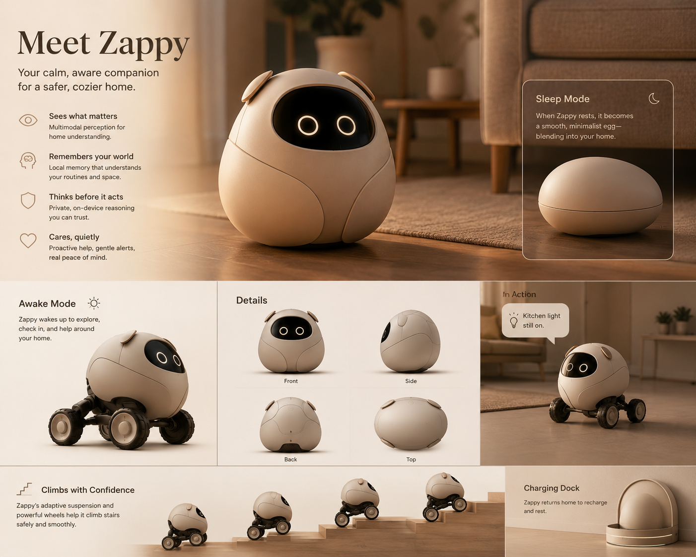
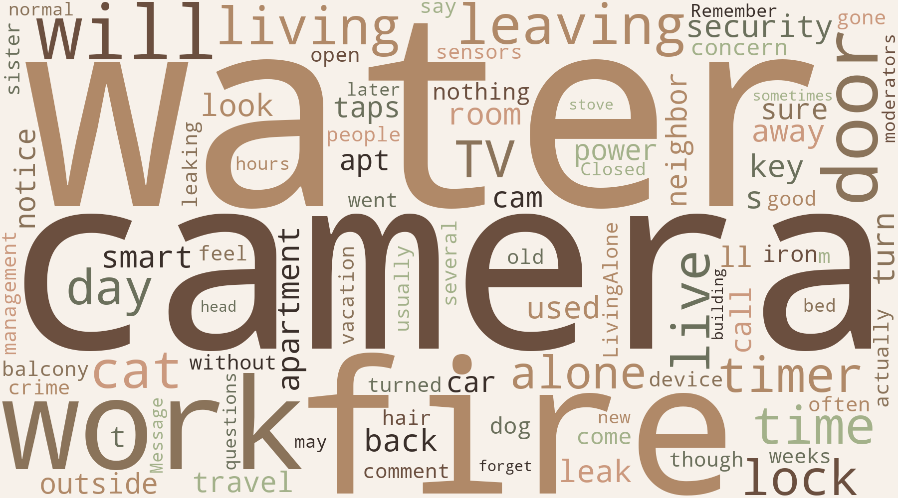

The current solution
A door camera. A living room camera. A camera for the dog's crate. Multiple devices, but still the need to constantly check.
Mobility · Presence · Privacy
Zappy is a privacy-first household awareness robot designed to reduce the mental burden of living alone. It combines mobility, quiet presence, and local AI so your home can notice what matters without becoming a surveillance system.
All data stays locally on the robot, and the app lets you control how much Zappy is allowed to know, remember, and act on.

Concept rendering · For illustration purposes only.
The story
Inspired by a real response from someone living alone. Their worry wasn't burglars. It was fire, flooding, and the pet waiting at home.
A door camera. A living room camera. A camera for the dog's crate. Multiple devices, but still the need to constantly check.
Zappy knows Sarah is away, Bella is home, and the house should be quiet.
{
"resident": "away",
"pet": "home",
"risk_focus": ["fire", "flooding"],
"expected_state": "quiet home"
}
✓ Bella resting
✓ No unusual heat
✓ No leaks detected
✓ Home quiet
Everything looks normal.
The problem
Is my cat okay while I am away?
Did I leave something on?
Did I leave a tap running?
What if the power goes out?
Did I lock up properly?
Community discovery
I collected 30+ early responses from people living alone. Their stories were not about wanting more cameras. They were about wanting reassurance.

“I just worry about my cat.”
“It is the taps I worry about.”
“I still ask my neighbour when something happens.”
Zappy to the rescue
Reads the current state of the home through local sensors and images.
Keeps track of events like who left, what changed, and when.
Compares the current state with what should normally be true.
Interrupts only when something seems unusual or worth checking.
Designed around local AI, transparent memory, and user control.
A home should not feel watched.
Team
Zappy is shaped by a multidisciplinary team combining robotics, software development, and applied AI.
Co-founder & Product Lead
Sushmita is a data scientist and machine learning engineer who has built and shipped AI products in industry, specializing in large language models, computer vision, and anomaly detection.
At Zappy she leads product strategy, user research, and business development, translating customer insight into the product roadmap and the company's direction. Her focus is building trustworthy AI that gives people peace of mind while keeping them in control of their data.
Co-founder & Embodied AI Lead
Saman is an embodied AI engineer specializing in Vision-Language-Action (VLA) models, the kind of AI that lets a robot perceive its surroundings, understand what is asked of it, and act. His expertise spans the full robot learning pipeline, from simulation and data collection to imitation learning and deployment on real hardware.
At Zappy he brings the robotics, AI, and software together, turning research ideas into a robot that can work reliably in a real home.